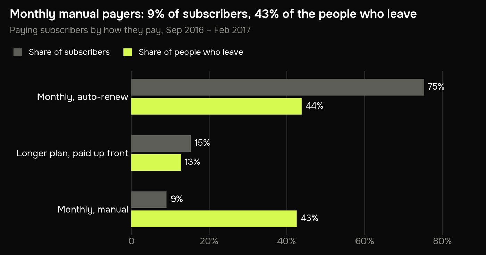

01 / 05 · SQL
Who are
we losing?
Who is a subscription service losing? Six churn questions for a music streaming service, each answered with one SQL query on 23 million real billing rows.
- 3.6%of subscribers leave each month
- 43%of leavers come from the 9% who renew by hand
- 31%of lapsed manual payers are back within 90 days
- SQL
- DuckDB
- Window functions
- Gaps and islands
